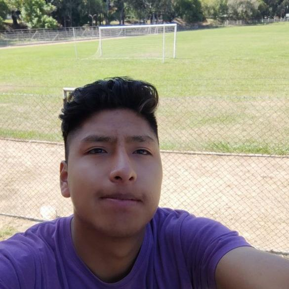
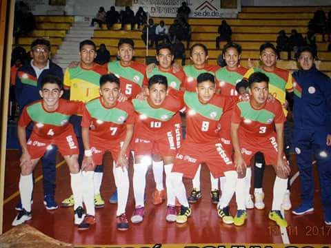
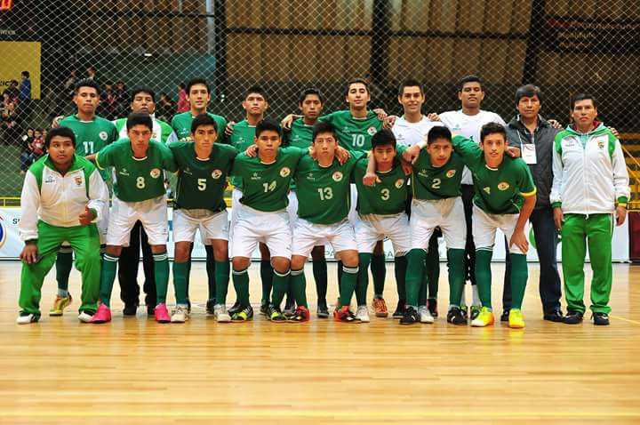
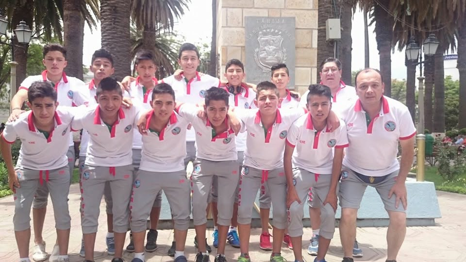
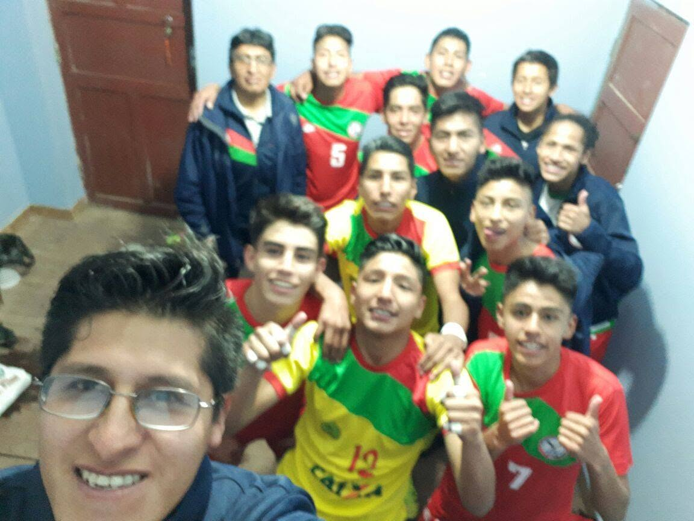
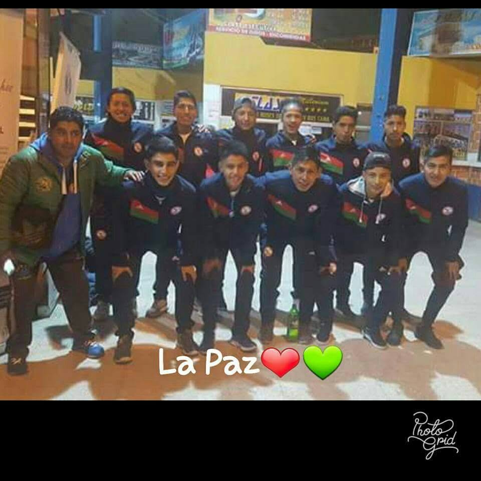

Sistema Web POS y Facturación
Control de inventarios, reportes de ventas, emisión de facturas computarizadas e integración de autenticación por roles.
Ingeniero en Sistemas Electrónicos, Técnico en Sistemas y Desarrollador Fullstack (27 años). Especializado en automatización industrial, IoT, ciberseguridad, infraestructura de servidores y desarrollo de plataformas web escalables.

Nací el 27 de febrero de 1999 en La Paz, Bolivia. A mis 27 años, he construido un perfil híbrido que une la ingeniería de hardware con el desarrollo de software moderno y los sistemas industriales.
Soy Licenciado en Ingeniería en Sistemas Electrónicos por la EMI, estudiante de Ingeniería de Sistemas (UPDS) e Informática (UMSA), y cuento con dos maestrías en curso y múltiples diplomados. Cuento con dominio de inglés técnico acreditado (B2) y una mentalidad forjada en la disciplina del deporte competitivo.
HTML5, CSS3, JavaScript, PHP, Laravel, React y bases de datos relacionales.
PLC Allen Bradley, variadores, SCADA, microcontroladores ESP32 y sensores.
Certificaciones Cisco CCNA, seguridad Wi-Fi con Kali Linux y Windows Server.
Universidad Privada del Valle (UNIVALLE)
800 Horas AcadémicasUniversidad Franz Tamayo (UNIFRANZ)
700 Horas AcadémicasUniversidad Católica Boliviana "San Pablo" (UCB)
Nota: 87 / 100Universidad Mayor de San Andrés (UMSA)
800 Horas AcadémicasUniversidad Privada del Valle (UNIVALLE)
800 Horas AcadémicasUniversidad Privada Boliviana (UPB)
200 Horas AcadémicasUniversidad Privada Boliviana (UPB)
200 Horas AcadémicasUniversidad Privada Boliviana (UPB)
200 Horas AcadémicasIntroduction to Networks & Switching, Routing, and Wireless Essentials
OpenEDG JavaScript Institute & Cisco Partner (Evolutech)
Norvic Software (Laravel, React y Next.js)
Colegio de Ingenieros en Electrónica (PLC, HMI, Neumática y Variadores)
Exabol & Docentes de Ingeniería de Sistemas UPEA (Kali Linux)
CENEFCO (90 hrs) y Educomser (30 hrs)
Soporte técnico a infraestructura de TI, mantenimiento preventivo y correctivo, configuración de dispositivos biométricos, CCTV y desarrollo web de aplicaciones internas.
Diseño y fabricación de circuitos impresos PCB, programación de sistemas web para control de equipos electrónicos y operación de máquinas CNC.
Instalación de antenas en estaciones de servicio, soporte en terminales de recarga y digitalización de bases de datos operativas para el subsidio nacional.
El deporte es mi mayor motor de constancia: fútbol, futsal, vóley, natación y atletismo. Con trayectoria en la Selección Paceña y Boliviana de Futsal, entreno activamente para superarme y los fines de semana disfruto competir con amigos en cancha.





Shooters tácticos que exigen reflejos y estrategia grupal:
Sonidos energéticos para programar y nuevas habilidades:
Historias que atrapan y mundos distópicos:
wilmerosco77@gmail.com